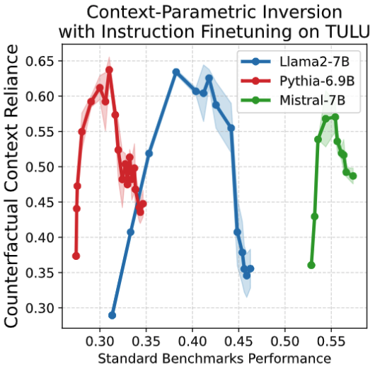

TLDR
- LLM's are instruction finetuned to improve their ability to follow the user instruction and input context.
- State-of-the-art models still struggle to rely on the context, when it is not aligned with parametric knowledge.
- We observe an intriguing phenomenon: contrary to the expectation, context reliance infact decreases with instruction finetuning, despite an initial expected increase.
- We call this as the Context-Parametric Inversion, and tie it to the properties of instruction finetuning data.
Why does Context-Parametric Inversion Happen?
- One posible reason is that there are not enough context based answering datapoints in instruction tuning dataset.
- We show that even when finetuning only on a context-only subset of Alpaca, there is a drop in context reliance. This is because not all contexts provide critical information.
- Context-critical datapoints: Context provides key information needed to answer a query, which the model doesn't know beforehand.